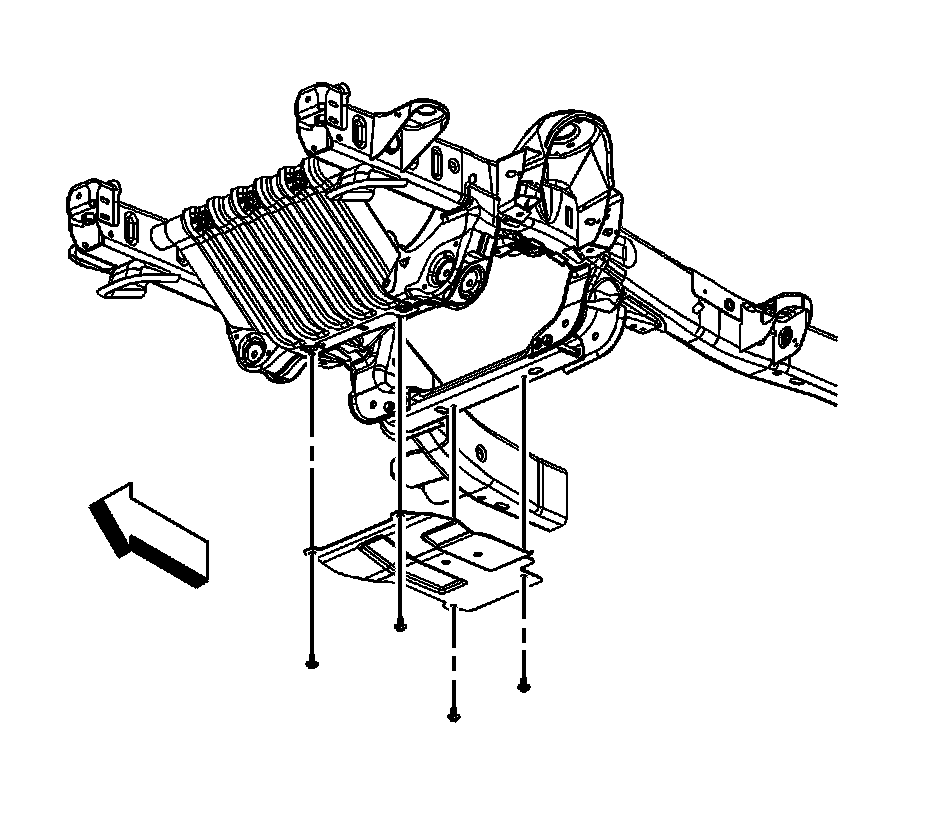

Oil Pan Skid Plate Replacement (2500/3500 with RPO NZZ)
Oil Pan Skid Plate Replacement (2500/3500 with RPO NZZ)
Removal Procedure

1.Raise and support the vehicle. Refer to Lifting and Jacking the Vehicle .
2.Remove the mounting bolts for the oil pan skid plate.
3.Remove the oil pan skid plate.
Installation Procedure
1.Position the oil skid plate on the frame.
2.Install the oil skid plate mounting bolts.
Notice:Refer to Fastener Notice .
TightenTighten the bolts to 28 N �m (21 lb ft).